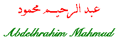

Abdelrahim Mahmud was born in 'Anabta,
Tulkarm in 1913. He had his elementary education at Tulkarm Elementary
School. He then went to Al-Najah National School and was a student
of Ibrahim Tukan who discovered Mahmud's
talent. He worked as a professor of Arabic Literature at Al-Najah.
When The Revolution against the Bristish Mandate started, he left his
job and joined in the fighting. He then went to Iraq where he attended the
Military College for three years.
Back in Palestine and in 1947, he joined the fighting agaist the Zionists
and died in the battlefield near Al-Nasirah (Nazereth) on July 13,
1948.
Poem
[Arabic]
[English]
 Go back to Poets from Palestine
Go back to Poets from Palestine